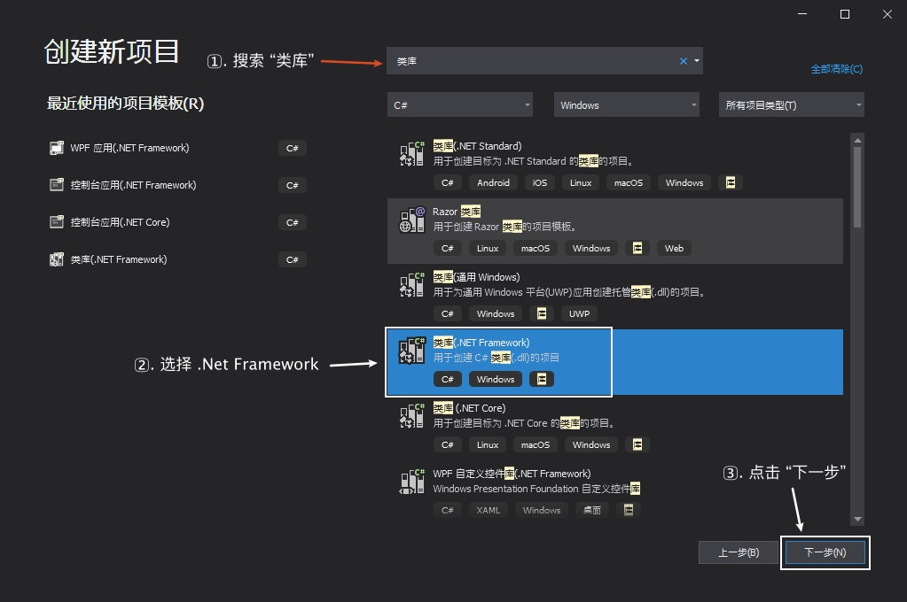
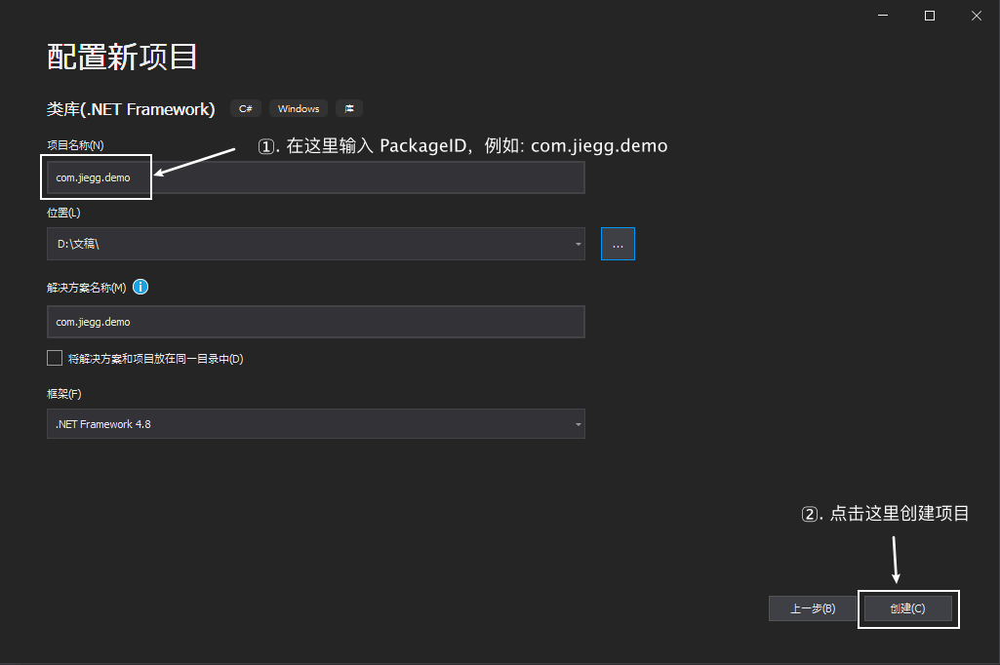
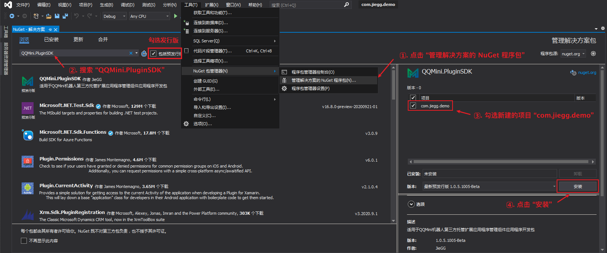
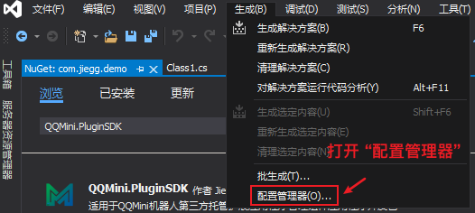
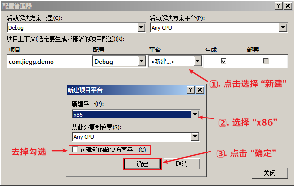

简介
本章节将叙述如何创建一个 QQMini插件
插件信息
在 QQMini插件 的V3机制中，我们采用了更完善的插件信息结构，用于插件区分、授权、开发者信息绑定以及插件商城(未来)。具体的插件信息模型见 插件模型
| 名称 | 类型 | 注释 |
|---|---|---|
| PackageID | String | 插件包ID，作为框架区分插件的唯一标识。应使用域名反写作为包ID。例: com.jiegg.demo |
| Name | String | 插件包ID，作为框架区分插件的唯一标识 |
| Version | Version | 插件版本，插件的唯一版本号，格式: 主板本号.次版本号.编译版本号.修订号 |
| Author | String | 插件作者，作为显示在框架中插件作者的名字 |
| Description | String | 插件说明，请写上插件的简要说明 |
| SDKVersion | Int32 | SDK版本，用于切换插件在框架中的运行机制 |
| DeveloperKey | String | 开发人员序列号。该序列号会影响到插件部分Api或事件的使用。请勿随意修改，错误的序列号将导致插件被拒绝载入 |
步骤
确定自己的插件的 PackageID，例如: com.jiegg.demo
打开 Visual Studio 创建类库项目
请搜索 “类库” 项目，并选择 类库(.NET Framework) 的项目进行创建

输入插件的 PackageID
修改项目名称为你的 PackageID。
注意： 如果项目名称与 PackageID 不一致，可能会导致编译结果无法被正常加载。
打开项目的 NuGet 管理
打开菜单 “工具” -> “NuGet包管理器” -> "管理解决方案的 NuGet 程序包"，打开之后勾选 “包括预发行版本”，在搜索框内搜索 “QQMini.PluginSDK”。选中之后将其安装到项目中

配置 x86 生成模式
安装完NuGet程序包后，Visual Studio 可能会提示架构不匹配的警告信息，此时我们打开配置管理器，将项目的生成类型从 AnyCPU 改为 x86 即可消除该警告


打开 Class1.cs 修改成如下图代码来继承 PluginBase 类
C# Code
using QQMini.PluginSDK.Core; using QQMini.PluginSDK.Core.Model; namespace com.jiegg.demo { public class Class1 : PluginBase { } }VB.NET Code
Imports QQMini.PluginSDK.Core Imports QQMini.PluginSDK.Core.Model Public Class Class1 Inherits PluginBase End Class使用 override 关键字重写 PluginInfo 属性并填写插件信息。有关插件信息的内容请到 插件信息。
C# Code
public override PluginInfo PluginInfo { get { PluginInfo info = new PluginInfo (); info.PackageId = "com.jiegg.demo"; info.Name = "复读机"; info.Version = new System.Version (1, 0, 0, 0); info.Author = "JieGG"; info.Description = "QQMini插件教程插件 (V3 插件机制)"; return info; } }VB.NET Code
Public Overrides ReadOnly Property PluginInfo As PluginInfo Get Dim info As PluginInfo = New PluginInfo() info.PackageId = "com.jiegg.demo" info.Name = "复读机" info.Version = New Version(1, 0, 0, 0) info.Author = "JieGG" info.Description = "QQMini插件教程插件 (V3 插件机制)" Return info End Get End Property
至此，QQMini.PluginSDK 的插件项目已经创建完毕。这时可以尝试编译项目，在编译时没有出现错误或警告即可。